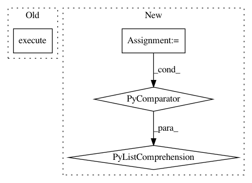

d8f0bd52827ec673a7f07ef818ea5ea740acd908,tests/python/pants_test/backend/python/tasks/util/build_local_dists_test_base.py,BuildLocalPythonDistributionsTestBase,_create_distribution_synthetic_target,#BuildLocalPythonDistributionsTestBase#Any#Any#,107
Before Change
for tsk in all_other_task_instances:
tsk.execute()
python_create_distributions_task_instance.execute()
synthetic_tgts = set(context.build_graph.targets()) - set(self._all_specified_targets())
self.assertEqual(1, len(synthetic_tgts))
synthetic_target = next(iter(synthetic_tgts))
After Change
]
python_create_distributions_task_instance = self._create_task(
python_create_distributions_task_type, context)
run_after_task_instances = [
self._create_task(task_type, context)
for task_type in run_after_synthesized_task_types
]
all_task_instances = run_before_task_instances + [
python_create_distributions_task_instance
] + run_after_task_instances
In pattern: SUPERPATTERN
Frequency: 3
Non-data size: 4
Instances
Project Name: pantsbuild/pants
Commit Name: d8f0bd52827ec673a7f07ef818ea5ea740acd908
Time: 2019-01-25
Author: 1305167+cosmicexplorer@users.noreply.github.com
File Name: tests/python/pants_test/backend/python/tasks/util/build_local_dists_test_base.py
Class Name: BuildLocalPythonDistributionsTestBase
Method Name: _create_distribution_synthetic_target
Project Name: pantsbuild/pants
Commit Name: cd9f387c7261139e9ac1ac86e0319d8ac73b929c
Time: 2016-03-15
Author: stuhood@gmail.com
File Name: tests/python/pants_test/engine/exp/scheduler_test_base.py
Class Name: SchedulerTestBase
Method Name: execute
Project Name: home-assistant/home-assistant
Commit Name: 61909e873f894591419ef25015df8360650886c3
Time: 2017-02-26
Author: paulus@paulusschoutsen.nl
File Name: tests/components/recorder/test_init.py
Class Name:
Method Name: _add_entities